| How the depth sort works |
Knight Lore draws a room by laying whole objects over one another in an off-screen buffer, each through its own mask, so that whatever is drawn last is in front. The order is everything: an object has to be drawn after everything it partly hides. This page shows how the game decides that order -- by comparing boxes, never pictures -- and draws the table it decides with straight out of the game. Which objects are redrawn in a frame at all is on how a moving object is drawn.
An object record holds a box as well as a picture: the centre in X and Y at +$01 and +$02, with half-sizes at +$04 and +$05, and the base in Z at +$03 with the full height at +$06. It is the same box collisions use. The picture is placed by calc_pixel_XY: pixel x = X + Y - 128 and, counting up from the bottom of the screen, pixel y = (Y - X + 128)/2 + Z - 104. So a step of +X moves a picture right and down, +Y right and up, +Z straight up -- and a step of (+1, -1, +1) does not move it at all. That is the line of sight, pointing at the viewer. Further back therefore means smaller X, larger Y and lower Z, and the game can order two objects from their boxes alone.
calc_display_order_and_render compares two boxes at a time: the candidate, the object it is thinking of drawing next, and one other object not yet drawn. On each axis it asks one question with three answers -- the candidate wholly on one side, the two overlapping, or the other wholly on the other side -- and each answer is a number, chosen so that the three add up to a different total for every one of the 27 combinations (compare_next_obj, compare_along_y, compare_along_x):
| Axis | Code | Code | Code |
|---|---|---|---|
| Z (base +$03, height +$06) | 0: candidate wholly above | 1: overlap | 2: other wholly above |
| Y (centre +$02, half-size +$05) | 0: candidate wholly further back | 3: overlap | 6: other wholly further back |
| X (centre +$01, half-size +$04) | 0: other wholly further back | 9: overlap | 18: candidate wholly further back |
"Wholly" is plain 8-bit subtraction: one box's edge at or beyond the other's. Boxes that exactly touch therefore count as apart. The total, 0 to 26, picks one of 27 addresses from the table at depth_order_tbl, and the sort jumps there (act_on_comparison).
Here is the table as it was read from the game when this page was built, one grid for each Z answer. In each picture the candidate is cyan and the other object yellow, placed as the three answers say and drawn in the order the entry asks for. There are four outcomes:
| Entry | How many | Meaning |
|---|---|---|
| iy_goes_first: other first | 7 | The other object is further back than the candidate, or level with it, on every axis, and further back on at least one. It has to be drawn first, so it becomes the candidate. |
| candidate_already_first: candidate first | 7 | The mirror image: the candidate is the one behind. It is going to be drawn first anyway, so there is nothing to do. |
| order_unconstrained: no order | 12 | Each box is in front of the other along some axis. Either may be drawn first. |
| objs_coincide: the boxes intersect | 1 | Overlapping on all three axes: the boxes share space and cannot be ordered (see below). |
"Candidate first" and "no order" are the same single instruction, a jump back to the next comparison; the table only names them differently. So a pair is given an order only when one box is behind the other, or level with it, on every axis -- which is exactly when one can hide part of the other under this projection.
| Z: candidate wholly above (Z code 0) | X: other wholly further back (0) | X: overlapping (9) | X: candidate wholly further back (18) |
|---|---|---|---|
| Y: candidate wholly further back (0) | 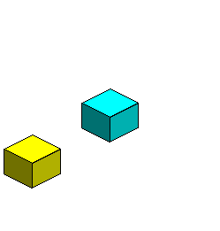 0: no order (order_unconstrained) | 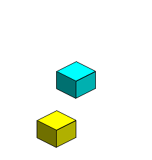 9: no order (order_unconstrained) | 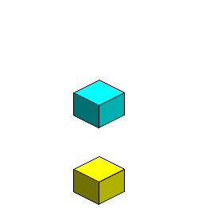 18: no order (order_unconstrained) |
| Y: overlapping (3) | 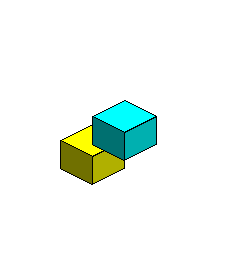 3: other first (iy_goes_first) | 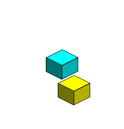 12: other first (iy_goes_first) | 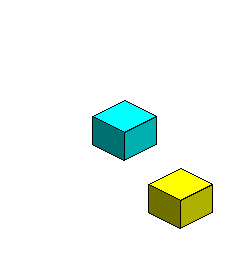 21: no order (order_unconstrained) |
| Y: other wholly further back (6) | 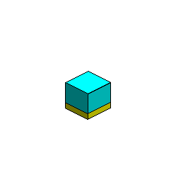 6: other first (iy_goes_first) | 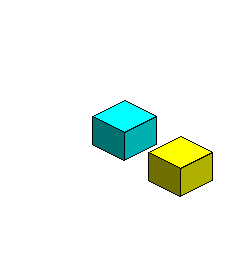 15: other first (iy_goes_first) | 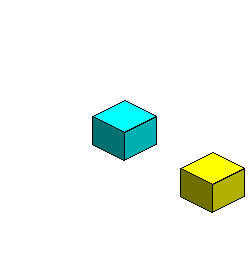 24: no order (order_unconstrained) |
| Z: overlapping in height (Z code 1) | X: other wholly further back (0) | X: overlapping (9) | X: candidate wholly further back (18) |
|---|---|---|---|
| Y: candidate wholly further back (0) | 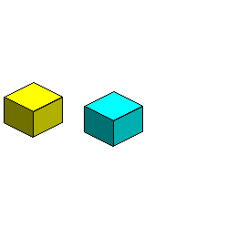 1: no order (order_unconstrained) | 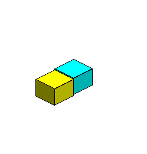 10: candidate first (candidate_already_first) | 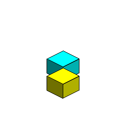 19: candidate first (candidate_already_first) |
| Y: overlapping (3) | 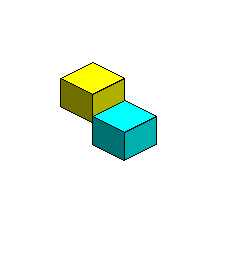 4: other first (iy_goes_first) | 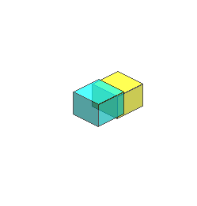 13: the boxes intersect (objs_coincide) | 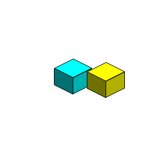 22: candidate first (candidate_already_first) |
| Y: other wholly further back (6) | 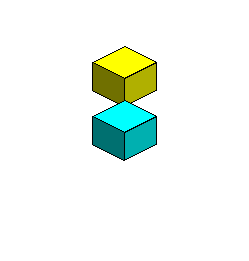 7: other first (iy_goes_first) | 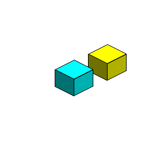 16: other first (iy_goes_first) | 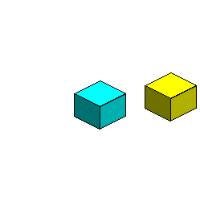 25: no order (order_unconstrained) |
| Z: other wholly above (Z code 2) | X: other wholly further back (0) | X: overlapping (9) | X: candidate wholly further back (18) |
|---|---|---|---|
| Y: candidate wholly further back (0) | 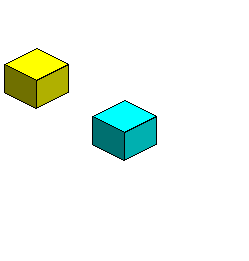 2: no order (order_unconstrained) | 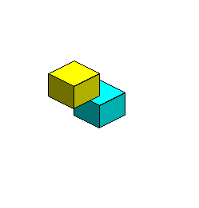 11: candidate first (candidate_already_first) | 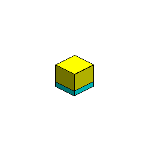 20: candidate first (candidate_already_first) |
| Y: overlapping (3) | 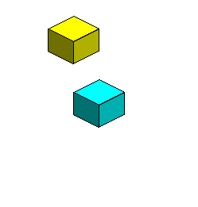 5: no order (order_unconstrained) | 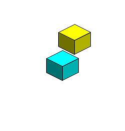 14: candidate first (candidate_already_first) | 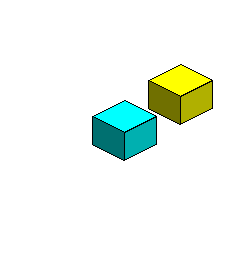 23: candidate first (candidate_already_first) |
| Y: other wholly further back (6) | 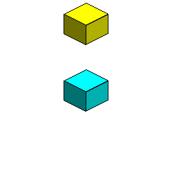 8: no order (order_unconstrained) | 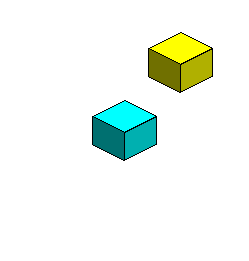 17: no order (order_unconstrained) | 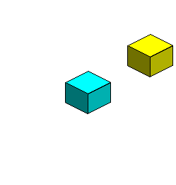 26: no order (order_unconstrained) |
Every "no order" entry is a pair apart on two axes in opposite senses: say the candidate is further back in Y but the other is further back in X. For one picture to cover part of the other, some line of sight would have to pass through both boxes. Along a line of sight X and Y change by equal and opposite amounts. Going from the candidate to the other, Y has to fall, since the other has the smaller Y; so X rises -- but X has to fall, since the other has the smaller X. No line of sight meets both, so neither picture can cover the other, and the order between them does not matter. The pictures above bear it out: in every "no order" grid square the two boxes are apart on the screen as well (the build checks that each time).
That argument is worked out from the projection, and holds for the boxes. It takes no account of the pixel offsets each object adds to its picture (+$12 and +$13), or of artwork that spills outside its object's box.
calc_display_order_and_render works through the list of objects to be drawn this frame (objects_to_draw, made by list_objects_to_draw) in passes, and each pass draws one object:
Every entry before the first undrawn one has been drawn, so the first candidate of a pass need only be compared with the entries after it; a candidate taken on after a switch is compared with the whole list. It is a search, not a sort in one sweep: each pass hunts for an object with nothing undrawn behind it, and may change its mind several times on the way.
Boxes can be placed so that no order works -- three or more, each partly behind the next and the last partly behind the first. The search would then switch candidates for ever. candidate_chain guards against it: it holds every object made the candidate since the last one was drawn. Before switching, iy_goes_first looks for the new object there, and if it is already in the list the order has gone round in a circle: break_order_cycle draws that object at once. No order satisfies every pair of a cycle, so wherever it is broken one pair is drawn the wrong way round; breaking it just keeps the frame moving.
Two details. The object a pass starts with is not put in the list, so a loop back to it is caught one step later, at the next object in the loop. And the list has room for seven objects and its end marker, and nothing checks its length: an eighth would write its end marker over the first byte of check_user_input. Whether a real room can make a chain that long has not been measured.
Entry 13, overlap on every axis, means the two boxes occupy the same space. objs_coincide imposes no order and carries on -- but if either of the pair is one of the seven charms (types 96 to 102) it destroys it, checking the candidate first and changing only one of the two. The charm becomes type 187, whose handler upd_185_187 zeroes its entry in the special-object table at special_objs_tbl and makes it vanish: it is gone from the game for good. See the charms.
Six stone blocks placed by a one-off room record and drawn by the game's own code in a simulator when this page was built: four on the floor round a fifth, with a sixth on top of the middle one. The record lists them nearest first, so the list the sort starts from is the wrong way round for drawing. The room builder made them records 4 to 9, and the draw list held 4, 5, 6, 7, 8, 9. The sort drew them in the order 8, 9, 7, 4, 5, 6. Each picture is the buffer after one more draw, with the pixels that draw changed in yellow -- including where a nearer block's mask cut into the ones already there.
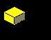
Drawn 1: record 8, the block in cell x 3, y 3 at level 0.
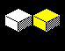
Drawn 2: record 9, the block in cell x 4, y 4 at level 0.
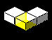
Drawn 3: record 7, the block in cell x 4, y 3 at level 0.
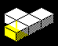
Drawn 4: record 4, the block in cell x 4, y 2 at level 0.
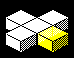
Drawn 5: record 5, the block in cell x 5, y 3 at level 0.
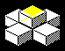
Drawn 6: record 6, the block in cell x 4, y 3 at level 1.